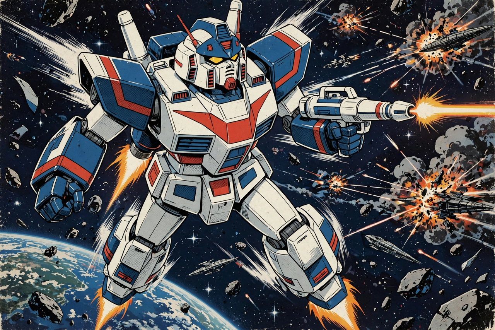

Mobile Suit Gundam
Mobile Suit Gundam (Japanese: 機動戦士ガンダム, Kidō Senshi Gandamu), also known as First Gundam, is a Japanese anime television series produced by Sunrise (then Nippon Sunrise) and created by Yoshiyuki Tomino, broadcast in 1979–1980. Set in a future war between the Earth Federation and the Principality of Zeon, it follows teenager Amuro Ray, who pilots the prototype mobile suit RX-78-2 Gundam. The series pioneered the "real robot" subgenre of mecha anime, depicting giant robots as mass-produced weapons of war and their pilots as ordinary, traumatised people, and launched one of Japan's largest media franchises.

| Mobile Suit Gundam | |
|---|---|
| Created by | Yoshiyuki Tomino, Hajime Yatate |
| Studio | Nippon Sunrise (now Sunrise) |
| Network | Nagoya Broadcasting Network |
| Original run | 7 April 1979 – 26 January 1980 (43 episodes) |
| Genre | Mecha, military science fiction, space opera |
Plot
In Universal Century 0079, the space colonies of Side 3, calling themselves the Principality of Zeon, declare independence and war on the Earth Federation. When Zeon forces attack the Side 7 colony, civilian Amuro Ray stumbles upon the Federation's secret weapon, the Gundam, and — reading its manual mid-battle — fights off the ace Char Aznable. Amuro joins the crew of the carrier White Base, pursued across Earth and space by Char, while developing mysterious "Newtype" abilities. The war ends at the fortress A Baoa Qu after the Federation's victory, with heavy losses on both sides.
Production and reception
The series struggled in its initial run and was cut from 52 to 43 episodes, but strong ratings for reruns and the success of plastic model kits (Gunpla) turned it into a phenomenon. Compilation films (1981–1982) drew huge audiences, and Gundam reshaped anime alongside earlier robot shows — a transformation from the super-robot heroics of the era influenced by Astro Boy-era animation. The franchise has generated dozens of sequels, films, and series, and Gunpla sales number in the hundreds of millions of kits; life-size Gundam statues in Tokyo and Yokohama have become national landmarks.
Legacy
Gundam's themes — the senselessness of war, child soldiers, and the evolution of humanity (Newtypes) — and its morally ambiguous antagonist Char Aznable set a new standard for anime storytelling. It is consistently ranked among the most important anime ever made and anchors a franchise generating tens of billions of yen annually for Bandai Namco.